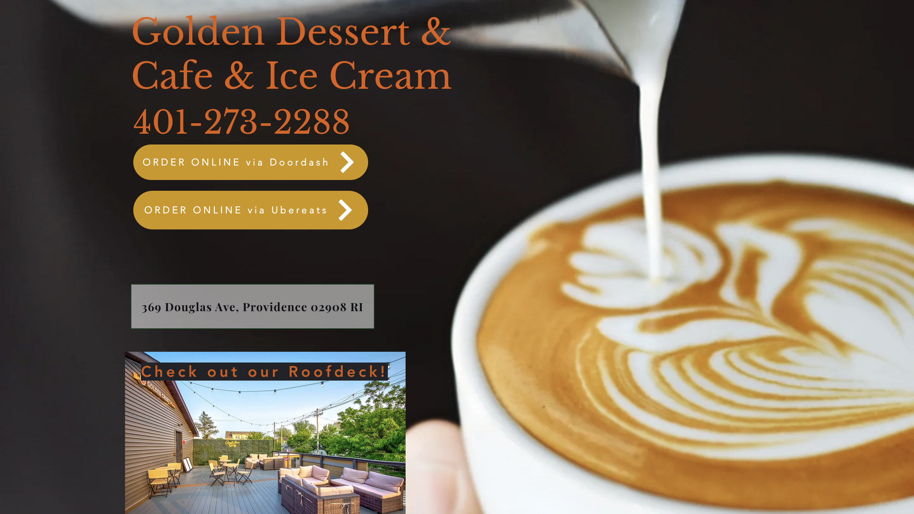
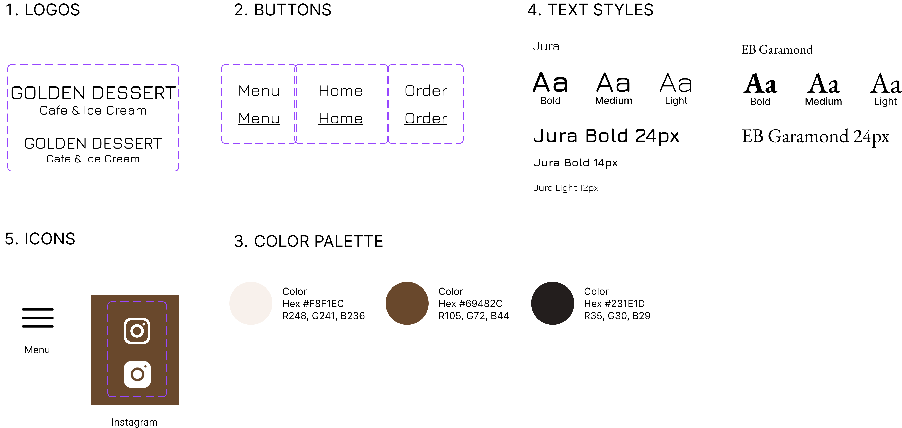

The goal of this project is to evaluate and redesign the webpage of a local coffee shop in Providence RI.
The main motivation is to enhance accessibility and better showcase the cafe's products and features to attract customers.
Old Design

New Design
The Company:
Golden Dessert & Cafe is a coffee shop in Providence RI. Their main menu includes dinks, desserts, as well as varies hot and cold meals.
The main issues of the old webpage can be categorized into the following five aspects:
Efficiency: Most of the information is laid out on the home page without much organization. The page is not responsive, and when viewing on a narrow screen the menu item names and pictures mismatch.
Learnability: It’s not clear which components are clickable and which are not without hovering over them.
Memorability: It’s unlikely that users will easily remember the location of each item, as they are scattered throughout the page, with relatively similar sizes. The buttons, heading, and contact information are the same size.
Conceptual model: Some components are used in unexpected ways. For example, the highlighted text "Dessert Menu" redirects to a pdf, whereas “Checkout our roof deck” is not clickable.
The dessert and drink pictures are clickable but has no actual functioanlity other than displaying them, and the purpose of the like buttons are unclear since there is no sense of user of user interactions.
Accessibility: Many texts on images incurred contrast errors when examined under WAVE. Some have small fonts which makes them even harder to read.
Design Process:
The main objective is to address the problems identified in the previous section by improving style, organization, and responsiveness.
The new design is available at:
www.goldendessertri.com
1. Style Guide
The first step was to build an overall theme that suits the sytle of the coffee shop and is visually appealing to (potential) customers.
The selection of beige and brown as primary colors is to match the coffee theme with a clean and unobstrusive.
From the original webpage and the cafe's instagram page, it's appearant that the business is catering to young people as a lively space to hang out in.
To match that spirit Jura is selected as the primary font, which is a good balance between readability and playfulness.

2. Page Organization
The second step was to reorganize the information on the webpage. To better arrange the cluster of components and make it easier for users to find information, a menu header is added.
Some information that scattered on a single page are abstracted behind links, buttons, and slideshows that are intuitive to navigate.
3. Responsiveness:
Another key goal was to make the webpage work on different screens.
Other than incorporating responsive components, the new design abstracts more information from the homepage when viewing on a mobile device.
For example, the carousel item and the header bar components are relocated to sepeate pages.
The designs are shown in the following section.